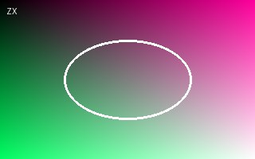
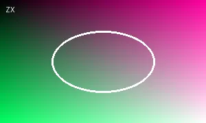
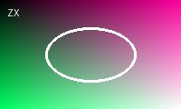
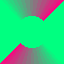
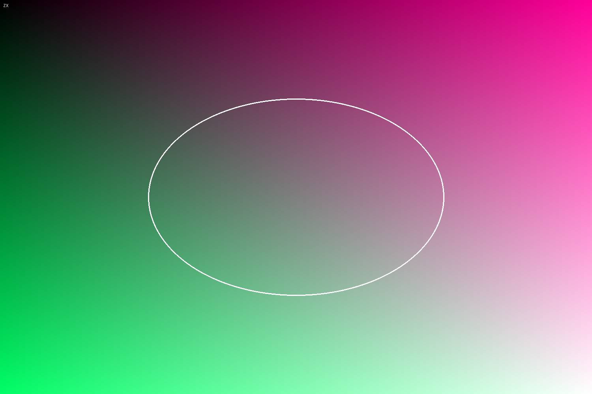

и вдвое меньше:
и вдвое меньше:
JPEG с размером: и вдвое меньше:
JPEG без размера (страница раскладывается заново):

PNG палитра с прозрачностью , RGBA  , серый .
, серый .
GIF-ссылка: — щелчок ведёт на главную.
WebP:

и с прозрачностьюНедоступные:




Конец страницы.